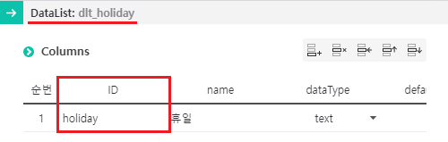
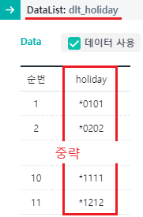

[Calendar] 특정 날짜를 휴일로 지정하기 - DataList 연결
1개요
Calendar의 휴일 설정을 'setHolidayRef' 메소드를 사용하여 DataList와 연결한 예제입니다.
2구현된 기능
Calendar에 휴일이 지정된 상태 - 휴일 데이터를 DataList와 연결
(기본 설정) Calendar에 휴일이 지정되지 않은 상태
3예제 테스트 방법
테스트를 위해 화면 로딩 시 Calendar에 2024년 12월 1일이 선택되도록 설정되었습니다.
3.1휴일이 지정된 상태
예제 영역 '휴일 지정'에서 테스트합니다.매년 1월 1일, 2월 2일, 3월 3일, 4월 4일, 5월 5일, 6월 6일, 7월 7일, 8월 8일, 9월 9일, 10월 10일, 11월 11일, 12월 12일이 휴일로 지정되었습니다.
Image 1.브라우저(Chrome) 실행 예시 - 휴일이 지정된 상태

4구현 예시
STEP 1: DataList 정의하기
Calendar의 휴일과 연결할 DataList를 정의합니다.
DataList를 생성하고 ID를 'dlt_holiday' 할당합니다.
필수로 정의될 컬럼은 1개이며, 컬럼의 ID는 환경에 맞게 정의할 수 있습니다.holiday : 휴일로 지정할 날짜
Image 2.웹스퀘어 스튜디오 예시 1

생성한 DataList에서 사용할 데이터를 정의합니다. (예제에서는 화면에서 직접 데이터를 생성하였습니다.)
날짜 형식은 YYYYMMDD(연월일)이며 매년 동일 날짜에 지정하는 경우 년도를 '*'(asterisk)로 정의합니다.Image 3.웹스퀘어 스튜디오 예시 2

STEP 2: DataList를 휴일 목록에 지정하기
원하는 시점에 스크립트로 휴일을 지정합니다. 예제의 경우 화면이 로딩 후 지정하기 위해 'scwin.onpageload' 메소드에 작성되어있습니다.
Example 1.Script
//Calendar cal_exam2에 DataList dlt_holiday의 컬럼 holiday를 휴일로 지정 cal_exam2.setHolidayRef("data:dlt_holiday.holiday");
5주요 API
setHolidayRef( setHolidayRef )
setHoliday( dateStr , removeHoliday )